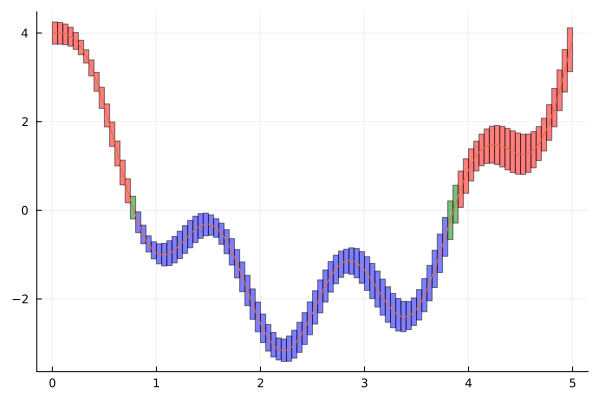
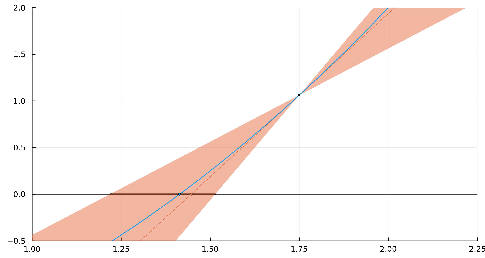

Week 7 Lecture 2: Finding roots
In this lecture we will consider the problem of isolating the roots of a function $f$. For the examples we will use the same function as in the previous lecture, $f(x) = \sin(5x) - 5x + x^2 + 4$.
f(x) = sin(5x) - 5x + x^2 + 4f (generic function with 1 method)By plotting an interval enclosure of this function we can isolate the roots to two distinct regions, corresponding to the subintervals in green in the plot below.
using IntervalArithmetic, Plots
N = 100
xs = mince(interval(0, 5), N)
ys = f.(xs)
colors = map(ys) do y
if in_interval(0, y)
:green
elseif 0 < inf(y)
:red
else
:blue
end
end
plot(vcat.(xs, ys), color = colors, legend = false)
plot!(range(0, 5, 1000), f)
With a little bit of work we can isolate the two regions, merging any adjacent intervals in the process.
# Find all intervals which might have roots
roots_unmerged = xs[findall(y -> in_interval(0, y), ys)]
roots = [roots_unmerged[1]]
for i in 2:lastindex(roots_unmerged)
if sup(roots[end]) < inf(roots_unmerged[i])
# Roots do not overlap
push!(roots, roots_unmerged[i])
else
# Roots overlap, take union
roots[end] = union_interval(roots[end], roots_unmerged[i])
end
end
roots2-element Vector{IntervalArithmetic.Interval{Float64}}:
Interval{Float64}(0.75, 0.8, com, true)
Interval{Float64}(3.8, 3.9000000000000004, trv, true)From this we get the two intervals $[0.75, 0.8]$ and $[3.8, 3.9]$. Our goal in this lecture will be to prove that these two intervals each have a unique root and also isolate it to high precision.
As discussed in the last lecture, the printed values of intervals cannot, in general, be trusted. The endpoints for the two intervals are actually
julia> BigFloat(inf(roots[1]))0.75julia> BigFloat(sup(roots[1]))0.8000000000000000444089209850062616169452667236328125julia> BigFloat(inf(roots[2]))3.79999999999999982236431605997495353221893310546875julia> BigFloat(sup(roots[2]))3.9000000000000003552713678800500929355621337890625
Proving existence and uniqueness
Let us start by proving that the intervals contain a root and that it is unique. To verify the existence and uniqueness of a root for a continuously differentiable function $f$ on an interval $[a, b]$ it suffices to verify that
- $\operatorname{sign}(f(a))\operatorname{sign}(f(b)) < 0$: If the signs at the endpoints differ then by the intermediate value theorem there is at least one root in the interval.
- $0 \not\in \mathcal{R}(f'; [a, b])$: If $f'$ is non-zero on the interval then there is at most one root in the interval.
Both of these are easily verified with interval arithmetic. For the first root we get for the first condition:
julia> a = interval(inf(roots[1]))Interval{Float64}(0.75, 0.75, com, true)julia> b = interval(sup(roots[1]))Interval{Float64}(0.8, 0.8, com, true)julia> sign(f(a))Interval{Float64}(1.0, 1.0, com, false)julia> sign(f(b))Interval{Float64}(-1.0, -1.0, com, false)julia> sup(sign(f(a)) * sign(f(b))) < 0true
Note that a and b are thin intervals enclosing the endpoints. Had we just written a = inf(roots[1]) then a would have been a Float64 and the evaluation of f(a) would have suffered from rounding errors.
For intervals that contain zero the sign function will return the interval $[-1, 1]$, so the above will work correctly in that case as well.
julia> sign(interval(-5, 5))Interval{Float64}(-1.0, 1.0, def, true)
For the second condition we need the derivative of $f$. Later in the course we will discuss how the interval can be computed automatically. For now we will manually implement it.
df(x) = 5cos(5x) - 5 + 2xdf (generic function with 1 method)We then have
julia> df(roots[1])Interval{Float64}(-7.602796786697805, -6.668218104318055, com, false)julia> in_interval(0, df(roots[1]))false
We conclude that $f$ has a unique root in the interval roots[1]. For the second root the same checks gives us
julia> a = interval(inf(roots[2]))Interval{Float64}(3.8, 3.8, com, true)julia> b = interval(sup(roots[2]))Interval{Float64}(3.9000000000000004, 3.9000000000000004, com, true)julia> sign(f(a))Interval{Float64}(-1.0, -1.0, com, false)julia> sign(f(b))Interval{Float64}(1.0, 1.0, com, false)julia> sup(sign(f(a)) * sign(f(b))) < 0truejulia> df(roots[2])Interval{Float64}(6.579074849069708, 7.74352309093335, trv, false)julia> in_interval(0, df(roots[2]))false
Proving that there is a unique root in the interval also in this case.
Refinement with bisection
We have proved that there are unique roots in both of the two intervals. Next we will compute refined enclosures of these roots. To begin with using a bisection method.
Let $f$ be a continuous function on an interval $[a, b]$ satisfying that $\operatorname{sign}(f(a))\operatorname{sign}(f(b)) < 0$. Let $c = \frac{a + b}{2}$ denote the midpoint of the interval. If $\operatorname{sign}(f(c)) = \operatorname{sign}(f(a))$ then $f$ has a zero in the interval $[c, b]$, if $\operatorname{sign}(f(c)) = \operatorname{sign}(f(b))$ then it has a zero in the interval $[a, c]$. If it happens that $\operatorname{sign}(f(c)) = 0$, then we have found a zero exactly at $c$.
We want to apply this idea to our function $f$. In this case we will switch to using Arblib.jl for the computations.
julia> using Arblibjulia> setprecision(Arb, 53) # Use same precision as Float6453julia> a = Arb(inf(roots[1]))0.75julia> b = Arb(sup(roots[1]))[0.800000000000000 +/- 4.45e-17]julia> c = (a + b) / 2[0.775000000000000 +/- 2.23e-17]julia> sign(f(a))1.0julia> sign(f(b))-1.0julia> sign(f(c))1.0julia> sign(f(a)) == sign(f(c))true
We can see that $\operatorname{sign}(f(c)) = \operatorname{sign}(f(a))$, hence we have a zero on the interval $[a, c]$!
Note that $\operatorname{sign}(f(a))$ will return an Arb value that encloses the sign of the input. For non-zero input this will be equal to either Arb(1) or Arb(-1). If the input overlaps zero we get an Arb value containing a combination of $-1$, $0$ and $1$, depending on how the input overlaps zero.
julia> typeof(sign(f(a)))Arblib.Arbjulia> sign(Arb(-2))-1.0julia> sign(Arb(2))1.0julia> sign(Arb(0))0julia> sign(Arb((-1, 1))) # Ball overlapping zero[+/- 1.01]
In many cases it can be more convenient to use the function Arblib.sgn_nonzero. It returns the integer $-1$ if the input is negative, $1$ if the input is positive and $0$ if the input contains zero.
julia> typeof(Arblib.sgn_nonzero(f(a)))Int32julia> Arblib.sgn_nonzero(Arb(-2))-1julia> Arblib.sgn_nonzero(Arb(2))1julia> Arblib.sgn_nonzero(Arb(0))0julia> Arblib.sgn_nonzero(Arb((-1, 1))) # Ball overlapping zero0
We now want to apply this method recursively. For this, let us write a function doing the computations. Where we now make use of Arblib.sgn_nonzero.
So far we have taken $c$ to be the midpoint of the interval. This is not necessary, any $c \in (a, b)$ would work. In the function below we make use of this by letting $c$ be an approximation of the midpoint.
function refine_bisection(f, a::Arb, b::Arb)
# Compute signs at endpoints
sign_a = Arblib.sgn_nonzero(f(a))
sign_b = Arblib.sgn_nonzero(f(b))
if sign_a == 0 || sign_b == 0
throw(ErrorException("could not determine signs at endpoints"))
end
if sign_a == sign_b
throw(ErrorException("signs at endpoints don't differ"))
end
step = 1 # For logging
while true
# Compute sign at approximate midpoint
c = midpoint(Arb, (a + b) / 2)
sign_c = sign(f(c))
if sign_c == sign_a
@info "Step $step: zero to the right"
# Replace interval [a, b] with [c, b]
a = c
sign_a = sign_c
elseif sign_c == sign_b
@info "Step $step: zero to the left"
# Replace interval [a, b] with [a, c]
b = c
sign_b = sign_c
else
# In this case sign_c == 0, so the sign at the midpoint
# could not be determined. We stop the loop and return.
@info "Step $step: could not determine sign at midpoint" f(c)
break
end
step += 1
end
return a, b
endrefine_bisection (generic function with 1 method)Applying this to our first root we get
julia> a = Arb(inf(roots[1]))0.75julia> b = Arb(sup(roots[1]))[0.800000000000000 +/- 4.45e-17]julia> root_1_refined = refine_bisection(f, a, b)[ Info: Step 1: zero to the right [ Info: Step 2: zero to the left [ Info: Step 3: zero to the right [ Info: Step 4: zero to the left [ Info: Step 5: zero to the right [ Info: Step 6: zero to the left [ Info: Step 7: zero to the left [ Info: Step 8: zero to the left [ Info: Step 9: zero to the right [ Info: Step 10: zero to the left [ Info: Step 11: zero to the left [ Info: Step 12: zero to the right [ Info: Step 13: zero to the right [ Info: Step 14: zero to the left [ Info: Step 15: zero to the right [ Info: Step 16: zero to the left [ Info: Step 17: zero to the left [ Info: Step 18: zero to the right [ Info: Step 19: zero to the right [ Info: Step 20: zero to the right [ Info: Step 21: zero to the right [ Info: Step 22: zero to the left [ Info: Step 23: zero to the right [ Info: Step 24: zero to the left [ Info: Step 25: zero to the left [ Info: Step 26: zero to the left [ Info: Step 27: zero to the right [ Info: Step 28: zero to the left [ Info: Step 29: zero to the left [ Info: Step 30: zero to the right [ Info: Step 31: zero to the right [ Info: Step 32: zero to the left [ Info: Step 33: zero to the left [ Info: Step 34: zero to the left [ Info: Step 35: zero to the left [ Info: Step 36: zero to the left [ Info: Step 37: zero to the right [ Info: Step 38: zero to the left [ Info: Step 39: zero to the left [ Info: Step 40: zero to the right [ Info: Step 41: zero to the left [ Info: Step 42: zero to the left [ Info: Step 43: zero to the left [ Info: Step 44: zero to the right [ Info: Step 45: zero to the left ┌ Info: Step 46: could not determine sign at midpoint └ f(c) = [+/- 2.77e-15] ([0.782930356706904 +/- 2.93e-17], [0.782930356706905 +/- 4.73e-16])julia> Arb(root_1_refined) # Convert lower and upper bounds into ball enclosure[0.78293035670690 +/- 5.53e-15]
and for the second root
julia> a = Arb(inf(roots[2]))[3.80000000000000 +/- 1.78e-16]julia> b = Arb(sup(roots[2]))[3.90000000000000 +/- 3.56e-16]julia> root_2_refined = refine_bisection(f, a, b)[ Info: Step 1: zero to the right [ Info: Step 2: zero to the left [ Info: Step 3: zero to the left [ Info: Step 4: zero to the left [ Info: Step 5: zero to the right [ Info: Step 6: zero to the right [ Info: Step 7: zero to the left [ Info: Step 8: zero to the right [ Info: Step 9: zero to the left [ Info: Step 10: zero to the left [ Info: Step 11: zero to the right [ Info: Step 12: zero to the right [ Info: Step 13: zero to the right [ Info: Step 14: zero to the right [ Info: Step 15: zero to the left [ Info: Step 16: zero to the right [ Info: Step 17: zero to the right [ Info: Step 18: zero to the left [ Info: Step 19: zero to the left [ Info: Step 20: zero to the left [ Info: Step 21: zero to the right [ Info: Step 22: zero to the right [ Info: Step 23: zero to the left [ Info: Step 24: zero to the right [ Info: Step 25: zero to the right [ Info: Step 26: zero to the right [ Info: Step 27: zero to the left [ Info: Step 28: zero to the left [ Info: Step 29: zero to the left [ Info: Step 30: zero to the right [ Info: Step 31: zero to the right [ Info: Step 32: zero to the right [ Info: Step 33: zero to the right [ Info: Step 34: zero to the left [ Info: Step 35: zero to the right [ Info: Step 36: zero to the right [ Info: Step 37: zero to the right [ Info: Step 38: zero to the left [ Info: Step 39: zero to the right [ Info: Step 40: zero to the left [ Info: Step 41: zero to the left [ Info: Step 42: zero to the left [ Info: Step 43: zero to the right [ Info: Step 44: zero to the left ┌ Info: Step 45: could not determine sign at midpoint └ f(c) = [+/- 1.23e-14] ([3.85517204868903 +/- 2.93e-15], [3.85517204868903 +/- 2.85e-15])julia> Arb(root_2_refined) # Convert lower and upper bounds into ball enclosure[3.85517204868903 +/- 3.60e-15]
What happens if you use higher precision for the computations? Try to run the code, but using setprecision(Arb, 256) (or even higher) in the beginning. How does the result change?
Refinement with interval Newton method
The bisection method is simple to implement, but comparatively slow. In each iteration we approximately halve the radius of the interval enclosure. We therefore effectively gain one bit of precision per iteration. If we want to compute the zero to say $1024$ bits of precision we would therefore need on the order of $1024$ iterations. It turns out that we can do much better than this if we also incorporate the derivative of the function.
In classical (non-rigorous) numerical analysis the Newton method is one of the standard methods for refining zeros of functions. If $x_0$ is an initial guess for the root then the Newton iteration given by
\[x_1 = x_0 - \frac{f(x_0)}{f'(x_0)}\]
gives us a refined approximation $x_1$. If the initial guess $x_0$ is sufficiently close to the zero then iterating this will give us a sequence $x_0, x_1, x_2,\dots$ that converges to the zero very fast. While the Newton method is useful in many cases it has two drawbacks:
- It doesn't always converge. If $x_0$ is not sufficiently close to a zero (and what sufficiently close means depends on the function), then it can jump around more or less randomly. When implementing the function you therefore need some way to catch this case.
- We do not directly get any information about how close we are to a zero. If $f(x_n)$ is very close to zero then it is reasonable to guess that $x_n$ is very close to a zero of $f$, but this doesn't give any concrete bounds and is not always true.
The interval Newton method is a version of the classical Newton method that completely solves the second problem, and to some extent handles the first problem.
Let $\bm{x} = [a, b]$ and $f: \bm{x} \to \mathbb{R}$ be a continuously differentiable function. Assume that $x_0 \in \bm{x}$ is a zero of $f$ and that $f'$ is non-zero in $\bm{x}$. For any $x \in \bm{x}$ the Mean Value Theorem gives us
\[f(x) = f(x_0) + f'(\xi)(x - x_0)\]
for some $\xi$ between $x_0$ and $x$. Using that $f(x_0) = 0$ and solving for $x_0$ gives us
\[x_0 = x - \frac{f(x)}{f'(\xi)} \in x - \frac{f(x)}{f'(\bm{x})} =: N(\bm{x}, x).\]
Since $x_0 \in \bm{x}$ by assumption we also have $x_0 \in N(\bm{x}, x) \cap \bm{x}$, for any $x \in \bm{x}$. In practice, taking $x$ to be the midpoint of $\bm{x}$ is the best choice. We therefore define the interval Newton operator $N(\bm{x})$ by
\[N(\bm{x}) = N(\bm{x}, c) = c - \frac{f(c)}{f'(\bm{x})},\]
where $c$ is the midpoint of $\bm{x}$. If we let $\bm{x}_0 = \bm{x}$ we can define the sequence
\[\bm{x}_{k + 1} = N(\bm{x}_k) \cap \bm{x}_k.\]
This will form a nested sequence converging to $x_0$. More precisely we have the following two results.
Assume that $N(\bm{x}_0)$ is well-defined. If $\bm{x}_0$ contains a zero $x_0$ of $f$, then so do all iterates $\bm{x}_k$. Furthermore, the intervals $\bm{x}_k$ form a nested sequence converging to $x_0$.
Assume that $N(\bm{x}_0)$ is well-defined, then
- If $N(\bm{x}) \cap \bm{x} = \emptyset$, then $\bm{x}$ contains no zeros of $f$.
- If $N(\bm{x}) \subseteq \bm{x}$, then $\bm{x}$ contains exactly one zero of $f$.
That all iterates $\bm{x}_k$ contain a zero follows from the above by induction. To show that they form a nested sequence we get two cases. Here we let $c_k$ be the midpoint of $\bm{x}_k$.
- If at any point we have that $f(c_k) = 0$ then $N(\bm{x}_k, c_k) = [c_k]$ and hence $\bm{x}_{k + 1}$ and all future iterates are exactly the thin interval containing the zero.
- If $f(c_k) \not= 0$ for all $k$ then it suffices to note that $c_k$ is not contained in $N(\bm{x}_k, c_k)$. This follows from the fact that $f'(\bm{x}_k)$ has a fixed sign and hence so does $\frac{f(c)}{f'(\bm{x})}$. It follows that $\operatorname{rad}(\bm{x}_{k + 1}) < \frac{1}{2}\operatorname{rad}(\bm{x}_{k})$ and the width of the intervals hence converge to zero.
The first part is an immediate consequence of Theorem 1, since if $\bm{x}$ contains a zero then so does $N(\bm{x}) \cap \bm{x}$ which contradicts the assumption that the intersection is empty.
For the second part, the idea is to prove that the graph of $f$ lies in between two lines that both cross the $x$-axis inside the interval $\bm{x}$, it would then follow that $f$ also crosses the $x$-axis inside the interval $\bm{x}$. The idea is visualized in the figure below, where the area between the two lines is region shaded in orange.
Since $f'$ is continuous on $\bm{x}$ there are points $\xi^+$ and $\xi^-$ where it attains its maximum and minimum respectively. Let $t_{\xi^+}(x)$ and $t_{\xi^-}(x)$ denote the two lines
\[t_{\xi^+}(x) = f(c) + f'(\xi^+)(x - c), \text{ and } t_{\xi^-}(x) = f(c) + f'(\xi^-)(x - c),\]
It follows that $f(x)$ lies in between $t_{\xi^+}(x)$ and $t_{\xi^-}(x)$. The two lines crosses the $x$-axis at $c - \frac{f(c)}{f'(\xi^+)}$ and $c - \frac{f(c)}{f'(\xi^-)}$ respectively. Since $\xi^+ \in \bm{x}$ we have
\[c - \frac{f(c)}{f'(\xi^+)} \in c - \frac{f(c)}{f'(\bm{x})} = N(\bm{x}),\]
and similarly for $\xi^-$. Since $N(\bm{x}) \subseteq \bm{x}$ by assumption it follows that both $t_{\xi^+}(x)$ and $t_{\xi^-}(x)$ crosses the $x$-axis inside the interval $\bm{x}$. Since $f$ is sandwiched in between these two lines it must also cross the $x$-axis inside $\bm{x}$.
The uniqueness follows directly from the fact that $N(\bm{x})$ being well-defined implies that $f'$ is non-zero in the interval.

We are now ready to implement the interval Newton method.
function refine_newton(f, df, x::Arb)
step = 1
isproved = false
while true
c = midpoint(Arb, x)
x_new = c - f(c) / df(x)
@info "Step $step: $x_new"
step += 1
if !isfinite(x)
throw(ErrorException("non-finite enclosure of Newton operator"))
end
if !Arblib.overlaps(x, x_new)
throw(ErrorException("new enclosure doesn't overlap root"))
end
if !isproved && Arblib.contains(x, x_new)
# We have x_new ⊆ x, so x_new is proved to contain a unique root!
@info "Proved existence of root!"
isproved = true
end
x_new = Arblib.intersection(x_new, x)
if !Arblib.contains_interior(x, x_new)
# No improvement in this iteration. Break and return
# value from last iteration.
break
end
x = x_new
end
return x, isproved
endrefine_newton (generic function with 1 method)Applying this to our two roots we get
julia> root_1_refined, isproved_1 = refine_newton(f, df, Arb(roots[1]))[ Info: Step 1: [0.783 +/- 6.06e-4] [ Info: Proved existence of root! [ Info: Step 2: [0.7829304 +/- 6.88e-8] [ Info: Step 3: [0.782930356706905 +/- 8.85e-16] [ Info: Step 4: [0.782930356706905 +/- 8.11e-16] [ Info: Step 5: [0.782930356706905 +/- 8.11e-16] ([0.782930356706905 +/- 8.60e-16], true)
and
julia> root_2_refined, isproved_2 = refine_newton(f, df, Arb(roots[2]))[ Info: Step 1: [3.855 +/- 7.27e-4] [ Info: Proved existence of root! [ Info: Step 2: [3.855172 +/- 1.31e-7] [ Info: Step 3: [3.85517204868903 +/- 3.78e-15] [ Info: Step 4: [3.85517204868903 +/- 1.95e-15] [ Info: Step 5: [3.85517204868903 +/- 1.95e-15] ([3.85517204868903 +/- 2.04e-15], true)
Compared to the bisection method we need significantly fewer iterations! You can try yourself at higher precision. How many iterations do you need for $256$ bits of precision? How about $10000$?